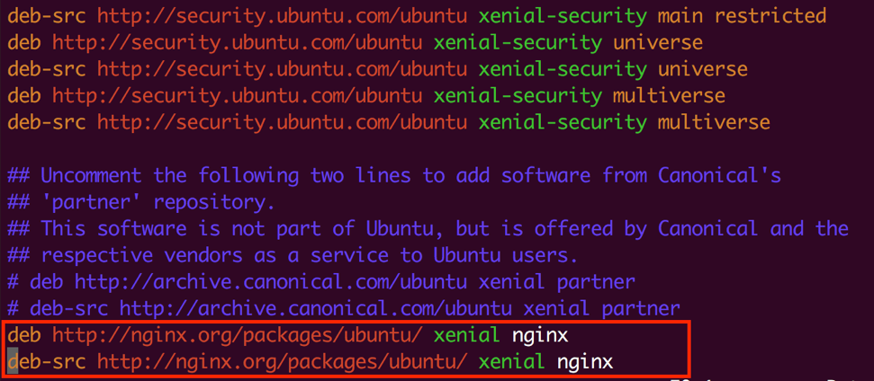

NGINX CORE
Flawless Application Delivery
Trainer Intro
James Tacker
Technology Consultant & Content Developer
Previous Training Work:
Sauce Labs
New Relic
Salesforce
Atlassian
james.tacker@servicerocket.com
Prerequisites/Expectations
Sysadmin, DevOps, Solution Architect
Some familiarity with Web Servers
Some familiarity with Linux
Text Editor: Vim, Vi, Emacs etc.
Some knowledge of Networking
This course is designed for those curious about nginx. Maybe you’re a system administrator or developer.
This course is the first step in your roadmap to understanding the ins and outs of NGINX.
This course assumes you have basic Linux command line knowledge as well as how to use a text editor like vim or nano.a
For those of you using Windows, you’ll want to a Linux OS on a virtual machine of your choosing.
The Training Environment
AWS EC2 Instances
Ubuntu
NGINX Plus
Log Into AWS
If you haven't done so already, please take the time to SSH into your EC2 Instances (Windows users use PuTTY ).
Check your email for the login credentials, check your spam folder!
ssh student<number>@<ec2-server-hostname>
Course Administration
Course Duration: 4 hours
Takes place over 2 days
Ask questions at any time!
Agenda: Part One
So for this first day we're going to cover a general overview of what NGINX is, then we will explore the web server use case and learn about the configuration file, then we will usetup a proxy server, as well as learn about logging. Eventually we will setup our site to use ssl, and then we will round out the day learning about variables
What is NGINX?
NGINX is an open source reverse proxy server. For those who don’t know, a reverse proxy server is a proxy server, sitting behind a firewall in a private network, that directs client requests to appropriate backend servers.
Common uses cases for a reverse proxy server are: Load Balancer, or as I like to call it a web traffic cop, that sits in front of something like apache and distributes client request across a group of servers based on the load they’re handling. HTTP Cache, reverse proxy servers can cache incoming common requests which will speed up the flow of traffic between your clients and servers by reducing the amount of redundant tasks that your backend servers need to manage. Web Server: NGINX can also take over the responsibilities of a web server and host websites that are accessible by the internet.
Module Objectives
This module enables you to:
Gain a basic understanding of NGINX's features
Learn about the history of NGINX
Understand the various use cases that NGINX supports
Origins of NGINX
2002: Igor Sysov working for rambler.ru
2004: First OSS release
2011: Company founded
2016-Present: 500+ customers and 80+ employees
NGINX was created by Igor Sysoev in 2002. He was a sysadmin who wasn’t content with the other open source platforms he was working with so he decided to build a better solution that could handle more concurrent users and heavier traffic. He also optimized in such a way that the syntax was simplified and it doesn’t require a lot of memory to run.
High Concurrency
Low Memory
NGINX Request Processing
Translate Request
Evaluate Configuration
Select Virtual Server
Proccess Request
Serve Response
Log Connection
NGINX processes a request in multiple phases, and each phase may contain multiple ”handlers” depending on the type of request.
For example: there are a three separate phases for URI rewrite translation that aren’t mentioned here, and they occur at different times during the lifecycle. Each rewrite phase can contain 3-6 handlers. If you’re interested in the specifics of the phases, as well as the event handler names, checkout NGINX’s source code documentation.
So generally, these are the steps in the request processing life cylce:
Master process translates the request
Search for a config on file system
Evaluates configs and selects server to process the request
server and location contexts will breakdown request into it's smallest parts i.e. the uri and its arguments
worker will process request and serve response
nginx lastely will log connection details
NGINX Architecture
Master Process: Evaluates Config
Child Processes: Adjust module behavior
Shared Memory: Counters, rate limits, etc.
Cache Manager and Loader: Cache settings
Worker Processes: Handle requests and responses
Nginx operates as an EBA system so that it has better performance output. There are a fixed number of threads performing tasks with no new threads being formed.
NGINX runs one master process and several worker processes. Each worker processes, can handle thousands of connections. The worker processes accomplish this by implementing a fast looping mechanism that continuously checks for and processes events. Decoupling actual work from connections allows each worker to concern itself with a connection only when a new event has been triggered
The other nice thing about this model is because it uses an event looping mechanism, you don’t have to restart the server to apply changes made to your configuration file. You only need to reload the configuration which will wait for worker processes to finish their tasks, shutdown the worker processes, the master process evaluates the new configuration file, and relays that new information to the worker processes, and the workers begin picking up new tasks
Basic NGINX Commands
Below commands can reload, gracefully stop, terminate, or check running config
$ nginx -s reload
$ nginx -s quit
$ nginx -s stop
$ nginx -t
$ nginx -T
These are the basic commands to run the executable file that loads nginx.
The executable contains an “s” parameter followed by whichever command you’re trying to signal to nginx
The command you we will frequently use is the reload command because changes made in the configuration file will not be applied until nginx is reloaded.
A few important things to remember when shutting down nginx. Using the fast shutdown (nginx -s stop) will kill the master process but NOT wait for the worker processes to finish what they’re doing before killing their processes. On the other hand nginx -s quit will kill the master process and then wait for worker processes to finish their tasks.
Reloading the Configuration
SIGHUP signal
Master Process evaluates new config
Checks for errors
Forks new workers while old workers shut down
nginx –s reload command sends the master process a SIGHUP signal.
The reload command is safe. Worker update is contingent upon lack of syntax errors
Master process then
forks new set of worker processes to process connections
signals old worker processes to shutdown gracefully
Module Objectives
This module enables you to:
Understand the Configuration File
Configure a Basic Setup
Explore server selection methods
NGINX Processes
To check running processes, run the following command:
$ ps aux | grep nginx
Configuration File
$ cat /etc/nginx/nginx.conf
Additional Configuration(s) Path
$ cat /etc/nginx/conf.d/*.conf
The NGINX configuration file is the heart of NGINX. At its highest level, NGINX consists of many modules that are driven by specific directives that we set in the configuration file.
The global configuration is called nginx.conf and lives in the file path /etc/nginx.
Your particular instance of nginx can have one long global configuration file but it can also refer to other...additional configuration files in conf.d directory
Include Directive
The following line in nginx.conf allows NGINX to search for additional configurations
include /etc/nginx/conf.d/*.conf;
Configuration File Structure
Directives
Blocks
Contexts
In its basic form a configuration file consists of any combination of directives, blocks, and contexts.
Directives
Configuration statement that controls NGINX Modules
listen 80;
root /usr/share/nginx/html;
index index.html index.htm index.php;
Blocks
Contains mixture of directives and data—begins and ends with curly brackets.
server {
listen 80;
root /usr/share/nginx/html;
index index.html index.htm index.php;
}
Contexts
Nested Blocks implying a hierarchy. Colloquially, 'Block' and 'Context' are interchangeable.
http {
include /etc/nginx/mime.types;
default_type application/octet-stream;
gzip on;
log_format
server {
listen 80;
root /usr/share/nginx/html;
index index.html index.htm index.php;
location {
proxy_pass http://backend;
}
}
}
Serving Content
Requirements:
HTTP Block Server Block Location Block
So how does it work? The combination of these two directives allow nginx to serve file such as images or html pages based on where we put them on our machines. (Go back to previous slide and highlight based on what you talk about below):
The http block will
server context is where nginx responds to specific requests. Each server context represents an individual virtual server and within it is usually many location blocks referencing location contexts to serve the content.
location context: the context we will deal with most regularly shares many qualities with server context but breaks up the requested IP/port/header combination by handling the requests based on request URI—which is usually the bit that comes after the domain name.
Server Block Example
server {
listen 80;
server_name www.example.com;
root /etc/student1/public_html;
}
We need to specify a server block to define our configurations for our virtual servers.
It’s always nested inside of an http context which can contain many server blocks to handle separate subsets of incoming connections.
We can have more than server block, and you most likely will need one if you have a large company serving a lot of content. Nginx decides which server is needed based on the details of the request—which are decided by:
listen port and server_name
Listen directive refers to the ip address and port combination that this server is designated to, so if the request matches these values it will potentially be selected as the server to handle the connection
Server_Name directive is the other way nginx will decide which server to use. Nginx will parse the host header of the request and match it against whatever we wrote here.
For those of you coming from an Apache background this is similar to VirtualHost.
Location Block Example
location /application1 {
}
Two most common types of locations:
Once NGINX has chosen which server to respond with, it then checks the location block to work out what configuration to apply, based on the URI of the request
If you put a root directive in a location block it will override the root directive in the server block. You can nest them but be careful it can get messy.
There are basically TWO TYPES of LOCATION BLOCKS: Prefix and Regex
Prefix Location
Always checked first, and NGINX selects and remembers longest match
location /application1 {
}
location /application1/images {
alias /media/data;
}
Second location is selected and matched if given request:
http://somedomain.com/application1/images/?img2
Prefix locations are always checked first
NGINX will always select and remember the longest matching location prefix
Example: we have a request to http:///application1/images/and then the name or argument of our image. In this example below NGINX will check the first location block for an exact match against an empty string, which won’t work because there isn’t an empty string. So then NGINX checks the second location block and here we have a match in appliation1, but it will continue checking and it sees that the third location block has an even more precise match. So the third location is selected and remembered.
Location Modifiers
Exact String Match =
Case Insensitive Regex ~*
Case Sensitive Regex ~
Stop Request Processing ^~
Named Location Routing @
=: If an equal sign is used, this block will be considered a match if the request URI exactly matches the location given.
~: If a tilde modifier is present, this location will be interpreted as a case-sensitive regular expression match.
~*: If a tilde and asterisk modifier is used, the location block will be interpreted as a case-insensitive regular expression match.
^~: If a carat and tilde modifier is present, and if this block is selected as the best non-regular expression match, regular expression matching will not take place.
@: prefix defines a named location. Such a location is not used for a regular request processing, but instead used for request redirection. They cannot be nested, and cannot contain nested locations. Usually used in conjunction with the try_files or error_page directive
Regex Location
Matched sequentially and only after prefix locations.
location /application1 {
}
location ~* ^\.(gif|jpg|jpeg|png)$ {
alias /media/data;
}
Matched after prefix location and are matched in the order they appear, so even if there’s a regex location in between two prefix locations in your configuration file it will still be matched after NGINX has checked all prefix locations with conventional strings before moving on to the regex location.
Case insensitive matching is represented by a tilde and asterisk
Case sensitive matching is represented by a tilde
So in this example we have a location block with insensitive case matching for any character before a dot, followed by the following file extension names.
Note that the ^ symbol in this case is part of the native regular expression symbolism, and is not related to location modifiers
Location Order
Configuration Example
server {
listen 80 default_server;
root /usr/share/nginx/html;
location = / {
}
location ~* ^\.(png|jpg)$ {
}
location ^~ /app1 {
}
}
Selection Order:
location ~* ^\.(png|jpg)$ {
Directive with = and an actual string match, the searching stops after literal match. It will search through the rest of the prefix location blocks, but if it finds a match with the carrot tilde parameter, the searching will stop.
If it doesn’t find any match in the prefix location then it will go to the regex location blocks.
If it doesn’t find additional matches there, then it will go back to the longest prefix matching location.
If #2 yielded a match, that result is used. Otherwise, the match from #3 is used.
Defining Server Names
server {
server_name mycompany.com *.mycompany.com;
}
server {
server_name mycompany.net *.mycompany.net;
}
Multiple server names can be useful for situations where you would serve mobile content or localized content within the same server
Defining Server Names
We use the server_name directive to define which server is to respond to a given request. For this is example, your organization would put the company’s domain name following the server_name directive.
It’s possible to define many server names, and in addition to using exact name matching, we can also define servers using wildcards check this for accuracy: regular expressions.
http://nginx.org/en/docs/http/ngx_http_core_module.html#server_name
In this example it will search for anything ending in the host name: example.org, before going on to the location directives to search for matching URI requests.
The server name is checked against the ”host” header field of the incoming HTTP request
This is based on the HTTP host header when the user types in their host name and not on the interface on which we receive the request
Default Server
server {
listen 80 default_server;
server_name example.net www.example.net;
}
You can actually set the default server with the default_server parameter on the listen directive.
The parameter checks against the HTTP request header “HOST” field and for each request that doesn’t match any of the hostnames defined in our server_name parameter, it will route the location to the server for the port.
The reason it’s on the listen directive is because NGINX checks the listen port first before it attempts to match the host header against the server name.
IP vs. Server_Name
server {
listen 192.168.1.1:80;
server_name example.org www.example.org;
}
server {
listen 192.168.1.1:80;
server_name example.net www.example.net;
}
server {
listen 192.168.1.2:80;
server_name example.com www.example.com;
}
In this configuration, NGINX first tests the IP address and port of the request against the listen directives of the server blocks. It then tests the “Host” header field of the request against the server_name entries of the server blocks that matched the IP address and port.
If the server name is not found, the request will be processed by the default server. For example, a request for www.example.com received on the 192.168.1.1:80 port will be handled by the default server of the 192.168.1.1:80 port, i.e., by the first server, since there is no www.example.com defined for this port. You may be asking, why does it serve the response from the top server even though there is no default_server specified on the listen port? THat's because NGINX sets the server at the top of configuration file as the default default_server until one is otherwise specified, that way no connections are dropped
Bad Requests
Use empty string for server_name directive to prevent bad requests
server {
listen 80;
server_name "";
return 444;
}
If requests without the “Host” header field should not be allowed, a server that just drops the requests can be defined:
Here, the server name is set to an empty string that will match requests without the “Host” header field, and a special NGINX’s non-standard code 444 is returned that closes the connection.
Since version 0.8.48, this is the default setting for the server name, so the server_name "" can be omitted. In earlier versions, the machine’s hostname was used as a default server name.
Lab 1: Serve Pages and Images
Open /etc/nginx/conf.d default.conf
Create a new configuration called server1.conf
Create a server 80 root /home/student1/public_html
Add three location
/application1 /application2 /images
In /images root /data;
Close and save the configuration. Then reload NGINX.
Test your EC2 url with the following URIs /application1 /application2 /images/logo.png
Open /etc/nginx/conf.d and rename the default.conf to default.conf.bak
Create a file called server1.conf in the conf.d folder in /etc/nginx
Add two location blocks that match requests for /application1 and /application2
Add a third location block that matches requests for /images
Override the root directive in the /images location block to specify the folder where your images are stored (i.e /data/images)
Open your browser to your server’s URL. What can you observe?
Now open (server)/application1/app1.html. What can you observe?
Now hit (server)/images/logo.png What can you observe?
Module Objectives
This module enables you to:
Configure Proxy Server
Understand how Proxy Buffering works
Demonstrate use of proxy_pass
Reverse Proxy Servers
Receives requests, passes them to backend servers
NGINX supports proxy for HTTP, HTTPS, TCP, UDP, and other protocols.
server {
listen 80;
server_name mydomain.com;
location / {
proxy_pass http://backend;
}
}
So first off, what's the difference between a proxy and reverse proxy? Well, to start the word proxy means to act on behalf of something else.
So if I was your proxy to a meeting, I would represent you and be responbile for relaying any information obtained at the meeting.
In terms of web servers, a reverse proxy is mostly a server-side idea, usually used in the context of CDNs (content distribution networks) for caching static HTTP content and passing dynamic content onto the application servers.
A proxy, also colloquilly referred to as "forward proxy" is usually a client side concept used for anonymity, to subvert censorship, and (back in the days of dial-up) as a web accelerator. The idea here is that the proxy event in this case is that the "forward proxy" retrieves data from another web site on behalf of the original requestee.
NGINX's use case is as a reverse proxy. So you can proxy requests to other servers or the same server
On the server which acts as a proxy, use the proxy_pass directive to pass requests to the proxied server
Setting up a proxy server is one of the most frequent uses of NGINX and is a good way to increase your webpages’ performance by redirecting requests for new content to other servers and serving familiar requests directly to the client. To set up one of your servers as a proxy server we include the proxy_pass directive.
proxy_pass Sets the address, and protocol, of the proxied server(s)
Syntax:
proxy_pass url Example:
location / {
proxy_pass http://backend:8080/application/;
}
This directive is mainly found in the location context and sets the address for the server we want to pass our requests to.
When a request matches a location with a proxy_pass directive in it, the request is then forwarded to the address with the URL specified in the directive.
The URL can be a domain name or an IP address or a server group. Can also contain a path and a port number as seen in the example
Proxy With/Without a Path
With a Path
location /application1 {
proxy_pass http://localhost:8080/otherapp/;
}
Without a Path
location /application2 {
proxy_pass http://localhost:8080
}
With a Path
Any request matching the location prefix is rewritten to replace the matched portion of the request’s URI, including the location prefix, with the proxy_pass URI.
In the example, a request to http://server/application1/app1.html will be proxied to http://server:8080/otherapp/app1.html
Without a Path
Any request matching the location prefix is rewritten to replace the matched portion of the request’s URI, NOT including the location prefix, with the proxy_pass URI.
In the below example, a request to http://server/application2/app2.html will be proxied to http://server:8080/application2/app2.html
Proxy Scenario
server {
listen 80;
root /home/student1/public_html;
location / {
proxy_pass http://localhost:8080;
}
location /application1 {
proxy_pass http://localhost:8080/sampleApp/;
}
location /images {
root /data;
}
}
server {
listen 8080;
root /data/proxy;
}
http://server is proxied to http://server:8080.
Will load the index.html page in /data/proxy
http://server/test is proxied to http://server:8080/test
Will load the index.html page in /data/proxy/test
http://server/application1 is proxied to http://server:8080/sampleapp
Will load the index.html page in /data/proxy/sampleapp
http://server/images is not proxied and will load content from /data/images
Lab 2: Setup a Reverse Proxy
Create a new configuration file called server2.conf /etc/nginx/conf.d
Define a server context that listens on port 90 root /data/server2
Open server1.conf from the previous exercise and modify the /application1 proxy_pass http://localhost:90/sampleApp/
Save and Reload NGINX
Open your browser and test your server url/application1. What do you see?
cd
cd /etc/nginx/conf.d
sudo vim server2.conf
server {
listen 8008;
root /data/server2;
}sudo vim server1.conf
server {
root /home/student1/public_html;
location /application1 {
proxy_pass http://localhost:8080/sampleApp/;
}
location /images {
root /data;
}Reload nginx.
Test server/application1
Explain why the client isn’t seeing /sampleApp in their URI because we used a url path in our proxy pass directive, it overrides the prefix location and sends the requests to /data/sever2 with our sample app folder but it’s not reflected in the client’s browser.
Proxy Buffers
Use Cases
You can enable proxy buffering when you wish to buffer information that you pass to your upstream as to not overload your upstream servers, and subsequently place queued responses in a buffer queue.
proxy_buffering: This directive controls whether buffering for this context and child contexts is enabled. By default, this is "on".
proxy_buffers: This directive controls the number (first argument) and size (second argument) of buffers for proxied responses. The default is to configure 8 buffers of a size equal to one memory page (either 4k or 8k). Increasing the number of buffers can allow you to buffer more information.
proxy_buffer_size: The initial portion of the response from a backend server, which contains headers, is buffered separately from the rest of the response. This directive sets the size of the buffer for this portion of the response. By default, this will be the same size as proxy_buffers, but since this is used for header information, this can usually be set to a lower value.
proxy_busy_buffers This directive sets max size of “client-ready” buffers.
The “client-ready” buffers are then placed in a queue.
This directive sets the maximum size of buffers that can be marked "client-ready" and thus busy. While a client can only read the data from one buffer at a time, buffers are placed in a queue to send to the client in bunches. This directive controls the size of the buffer space allowed to be in this state.
Proxy Busy Buffers Example
server {
proxy_buffering on;
proxy_buffer_size 1k;
proxy_buffers 24 4k;
proxy_busy_buffers_size 8k;
proxy_max_temp_file_size 2048m;
proxy_temp_file_write_size 32k;
location / {
proxy_pass http://example.com;
}
}
In the example, this configuration increases the number of available proxy buffers for each upstream request, while trimming down the buffer that likely stores the headers:
Module Objectives
This module enables you to:
Setup Logging to audit connections to NGINX
Demonstrate use cases for log levels
Differentiate between access and error log
error_log
Configures the logging settings for error messages
Syntax: error_log file log_level
"Log Level" specifies the detail of the output
Logging is a good way to see what’s going on, and using the error-log directive can configure what gets logged and where.
It can be used in the main, server, http, and location contexts. The log level will specify how detailed the log will actually be.
Can be used in the main, http, and server context
Log Levels
Log output includes all messages from the specified level and all other levels which are more severe
Here is a list of possible levels from most mundane to most severe.
Debug: used to pinpoint problems
Info: used to convey general information about processes
Notice:Something normal occuring, possibly a handshake or other transaction
Warn:Something out of the ordinary, but not cause for great concern
Error: means something didn't happen as expected
Crit: means there are import issues that must be addressed
Alert: means that there are very important issues that require prompt action
Emergency referes to a situation where the system is unusable
access_log
Records all attempts to access the server
Default log type is combined
#Example
access_log /var/log/nginx/server3.access.log combined;
The access log is good for security and auditing all attempted accesses to your server and is specified using the access log directive.
FOr the example: this is the output and what gets written to the access.log using the combined log type.
To use the access_log directive, specify the file path and log type
Logging Best Practices
Keep a separate log files for each server
server {
server_name server1.com;
root /data/server1.com;
error_log logs/server1.error.log info;
}
server {
server_name server2.com;
root /data/server2.com;
error_log logs/server2.error.log info;
}
Rotating Logs
Run this shell script in a cron job
#Get Yesterday's date as YYYY-MM-DD
YESTERDAY=$(date -d 'yesterday' '+%Y-%m-%d')
PID_FILE=/run/nginx.pid
LOG_FILE=/var/log/error.log
OLD_FILE=/var/log/error-$YESTERDAY.log
#Rotate yesterday's log.
mv $LOG_FILE $OLD_FILE
#Tell nginx to open the log file
kill -USR1 $(cat $PID_FILE)
Sends kill signal to master process, creates new log file with date appended
This script can be used with any log file, including the access log
In the past NGINX had a JS file that essentially did the same thing, but since newer versions it's been deprecated. This is the recommended way to roate your log files moving forward
syslog Use this protocol when sending messages to syslog servers such as: splunk , or syslog-ng
error_log syslog:server=192.168.1.1 debug;
access_log syslog:server=unix:/var/log/nginx.sock,nohostname;
access_log syslog:server=[2001:db8::1]:12345,facility=local7,tag=nginx,severity=info combined;
server=address: defines the address of the syslog server
facility=string: Sets the syslog message
tag=string: Sets any tags associated with the syslog message, default in this case is 'nginx'
nohostname: disables adding the hostname in the syslog header
Lab 3: Setup Logging
Open server1.conf at /etc/nginx/conf.d error_log access_log
Set the error_log info access_log combined
Repeat the same steps for server2.conf
Save and Reload NGINX
Open your browser and test your http://server:90/
Back in your terminal, run a tail -f
Solution
server {
listen 80;
root /home/student1/public_html;
error_log /var/log/nginx/server1.error.log info;
access_log /var/log/nginx/server1.access.log combined;
location /application1 {
proxy_pass http://localhost:90/sampleApp/;
}
location /application2 {
}
location /images {
root /data;
}
}
server {
listen 8080;
root /data/server2;
error_log /var/log/nginx/server2.error.log info;
access_log /var/log/nginx/server2.access.log combined;
}
Module Objectives
This module enables you to:
Configure a HTTPS server
Understand how NGINX handles SSL
Set limit rates
http_ssl_module
Provides directives for configuring and managing HTTPS servers
Requires openssl
When compiling from source, it's not built by default so you will have to use the --with parameter using the configure tool
If you installed nginx from a binary distribution however, this module should be included
The only caveat here is that you must have openssl installed and configured on your machine
ssl proxy_ssl
ssl: encrypting incoming client connection (SSL Termination)
proxy_ssl: encrypting proxied connections
SSL Termination
SSL terminates at NGINX level, NGINX handles handshake overhead to take load off the backends
http {
ssl_session_cache shared:SSL:10m;
ssl_session_timeout 10m;
server {
listen 443 ssl;
server_name www.example.com;
keepalive_timeout 70;
ssl_certificate www.example.com.crt;
ssl_certificate_key www.example.com.key;
ssl_protocols TLSv1 TLSv1.1 TLSv1.2;
ssl_ciphers HIGH:!aNULL:!MD5;
...
}
}
SSL operations consume extra CPU resources. The most CPU-intensive operation is the SSL handshake. There are two ways to minimize the number of these operations per client:
Enabling keepalive connections to send several requests via one connection
Reusing SSL session parameters to avoid SSL handshakes for parallel and subsequent connections
Sessions are stored in the SSL session cache shared between worker processes and configured by the ssl_session_cache directive. One megabyte of cache contains about 4000 sessions.
The default cache timeout is 5 minutes. This timeout can be increased using the ssl_session_timeout directive.
This is a sample configuration optimized for a multi-core system with 10 megabyte shared session cache:
Configuring an HTTPS Server
Define ssl on listen port
Generate trusted certificate and private key
Configure protocols and ciphers
So diving a little bit deeper, let's explore how to setup HTTPS based on each directive
The first thing you may have noticed in the previous slide was that we were listening on the standard SSL port 443, and also we appeneded the ssl parameter on the listen port
Next thing we need to do is define a certificate and private key. As a quick reminder the certs are sent to the clients, whereas the private key is used in the trust store to make sure the server is the legititmate destination
Finally we can specifidy the ssl protocols and ciphers, which will indicate which device and browser combo are accpeted by the nginx configurations
For example: older browsers, OS's, and platforms are vulnerable to various kinds of attacks, so limiting access to these will imporve website security, however there will be a trade off with alienating a portion of your user base.
Certs and Keys
ssl_certificate
ssl_certificate_key
server {
listen 443 ssl;
root /data;
error_log /var/log/nginx/secure_server.error.log
ssl_certificate /etc/nginx/nginx.crt:
ssl_certificate_key /etc/nginx/nginx.key;
}
The server certificate is a public entity. It is sent to every client that connects to the server.
The private key is a secure entity and should be stored in a file with restricted access, however, it must be readable by nginx’s master process.
The private key may alternately be stored in the same file as the certificate:
Protocols and Ciphers
ssl_protocols
ssl_protocols TLSv1 TLSv1.1 TLSv1.2;
ssl_ciphers
ssl_ciphers ECDH+AESGCM:ECDH+AES256:ECDH+AES128:DH+3DES:!ADH:!AECDH:!MD5
Use the ssl_protocols directive to specify which protocols are enabled
ssl_ciphers configures which ciphers to use
Follows the OpenSSL format, and dependingin on which protocols you disable or enable it will provide more or less security. We have detailed explanations on how to get an A+ rating on SSLLabs.com in other courses, but these examples provide a general idea
Perferred Ciphers
Configure NGINX to tell client there is a preferred order of available cipher suites
ssl_prefer_server_ciphers on;
Dual Stack "RSA" and "ECC"
server {
listen 443 ssl;
server_name example.com;
#RSA cert
ssl_certificate example.com.rsa.crt;
ssl_certificate_key example.com.rsa.key;
#ECC cert
ssl_certificate example.com.ecdsa.crt;
ssl_certificate_key example.com.ecdsa.key;
}
ECC is 3x quicker than equivalent‑strength RSA certificates
To support both RSA and ECC certificates, in the configuration include pair of ssl_certificate and ssl_certificate_key directives for each certificate type.
With NGINX Plus R10, you can publish SSL/TLS services using both RSA and ECC certificates. In our testing, ECC certificates were up to 3x quicker than equivalent‑strength RSA certificates; this translates to more SSL/TLS connections per server and faster SSL/TLS handshakes.
NGINX Plus selects the optimal certificate based on each client’s capabilities, allowing modern clients to use higher‑speed ECC certificates while still supporting legacy RSA‑only clients.
Popular Use Cases
Combine HTTP & HTTPS
server {
listen 443;
listen 80;
server_name example.com;
root /home/student1/public_html;
}
A server that can accept both HTTP and HTTPS requests
Gives the flexibility of just having one server to handle both requests as opposed to having to define another server
Use multiple listen directives
Popular Use Cases
Force incoming traffic to HTTPS
#server 1
server {
listen 80;
return 301 https://$host$request_uri;
}
#server 2
server {
listen 443 ssl;
ssl_certificate /etc/nginx/ssl/server.crt;
ssl_certificate_key /etc/nginx/ssl/server.key;
}
Security best practice is to only serve content over HTTPS.
If a user makes a request over HTTP, we can redirect to HTTPS using a 301 return code
Lab 4: Configure HTTPS
Use openssl to generate a cert and key in /etc/nginx:
sudo openssl req -x509 -nodes -days 365 -newkey rsa:2048 -keyout nginx.key -out nginx.crt
In /etc/nginx/conf.d example_ssl.conf
Uncomment the example HTTPS server block
Replace your cert and key with the one you generated
Save and reload NGINX
Test http://server/ index page using https
Click-through the warning message, what do you see?
Solution
server {
listen 443 ssl;
root /usr/share/nginx/html;
ssl_certificate /etc/nginx/nginx.crt;
ssl_certificate_key /etc/nginx/nginx.key;
...
Restricting Access
allow deny
Both directives can be applied at the HTTP context, server or location block
Can specify an IP address, domain name or Unix socket
Basic HTTP Authentication
Requires users to specify a login and password via the browser. Syntax is:
auth_basic realm | off
Can be enabled at the HTTP context level, server context or location context
“Off” is used to turn off authentication
Requires a password file to be defined
Password file is specified via the auth_basic_user_file directive
Basic Auth Example
server {
listen 8080;
root /home/johnny/public_html;
auth_basic “restricted server”;
auth_basic_user_file /etc/nginx/htpasswd;
location /public_area {
auth_basic off;
}
}
Password File
name1:password1
name2:password2
#comments
Usernames and passwords are stored in a file
Passwords must be encrypted in one of the following ways:
crypt() function of the “htpasswd” utility from Apache
openssl passwd command
auth_request
server {
listen 443 ssl;
root /usr/share/nginx/html;
...
location /private {
auth_request /auth;
auth_request_set $user $upstream_http_x_user;
proxy_set_header x-user $user;
proxy_pass http://backend_server;
}
}
Implements auth based on result of subrequest rather than validating user and pass via browser.
auth_request uri | off: Enables auth and sets URI where requests are sent
auth_request_set: Sets the request variable value after the authorization request completes
Auth_request_set: The value may contain variables from the authorization request, such as $upstream_http_*.
Lab 5: Setup Basic Authentication
Open the password file called “htpasswd” inside /etc/nginx
Delete the password for the admin entry
Close and save the file. Back in the terminal, run openssl passwd
Specify any user and password. Copy the encrypted output to your clipboard and
paste into htpasswd
Open server1.conf and enable authentication on the server level
Save and reload NGINX. Open a browser and hit http://server
Login with your username and password you specified
Solution
server {
listen 80;
root /home/student1/public_html;
error_log /var/log/nginx/server1.error.log info;
access_log /var/log/nginx/server1.access.log combined;
auth_basic "protected";
auth_basic_user_file /etc/nginx/htpasswd;
...
Setup Limit Rates
Limitations based on:
Number of Connections
Number of Requests
Download Speeds
The number of connections can be limited based on a key value (usually per IP address or per server)
The number of requests that can be processed per second or per minute
Throttle Download Speeds
Auth_request_set: The value may contain variables from the authorization request, such as $upstream_http_*.
Limiting Connections
Here, a client IP address serves as a key. Note that instead of $remote_addr, the $binary_remote_addr variable is used here. The $remote_addr variable’s size can vary from 7 to 15 bytes.
The stored state occupies either 32 or 64 bytes of memory on 32-bit platforms and always 64 bytes on 64-bit platforms. The$binary_remote_addr variable’s size is always 4 bytes. The stored state always occupies 32 bytes on 32-bit platforms and 64 bytes on 64-bit platforms.
One megabyte zone can keep about 32 thousand 32-byte states or about 16 thousand 64-byte states. If the zone storage is exhausted, the server will return the 503 (Service Temporarily Unavailable) error to all further requests.
Directive must be defined in the HTTP context
Variable can be:
$binary_remote_addr
$server_name
limit_conn Specify shared memory zone in desired context
Syntax:
limit_conn zone number_of_connections
http {
limit_conn_zone $binary_remote_addr zone=ip:10m;
server {
…
location /downloads {
limit_conn ip 5;
}
Use limit_conn directive on the http, server or location context to apply the limitation
Limiting Request Rate
Set request rate, name, key, and duration in Shared Memory Zone
Example:
limit_req_zone $server_name zone=one:10m rate=1r/s
Use limit_req_zone directive on the http context to set shared memory zone
Set the rate in either requests per second or request per minute
Like in this example we're setting a request rate zone based on the predefined $server_name variable as the key, the zone name is one with a size of ten megabytes, and the rate is 1 request per second
To use this shared memory zone we need to specify the limit_req directive in the server or location context (details on next slide)
limit_req Syntax:
limit_req zone='name' [burst=n.o | nodelay];
http {
limit_req_zone $server_name zone=ten:10m rate=10r/s
…
server {
…
location /data {
limit_req zone=ten burst=15;
}
}
}
Burst parameter specifies the maximum number of requests that can be queued for processing
If the number is exceeded, NGINX responds with 503 error. Specifying “nodelay” means requests cannot be queued
In this example we're defining a request rate zone with the $server_name variable as the key again. Then the name and size of the zone "zone=ten:10m," and finally the request rate which is 10 requests per second.
Now when we apply the limitation we also use the burst parameter, this value should never be less than the request rate, this value of 15 means that 15 additional requests will be placed in a processing queue, and if any more requests reach the server the server will respond with a 503 error.
Limiting Download Rate
Syntax:
limit_rate speed
location /media {
limit_conn ipzone 5;
limit_rate 50k;
}
Much like
limit_conn limit_req Apply limit_rate directive in the HTTP, server or location contexts
Syntax:
limit_rate speed
Speed is defined in bytes per second
Rate limit is applied to each connection
Can be used in conjunction with limiting connections
limit_rate_after Throttle download speeds after client builds a buffer
location /videos {
limit_rate_after 500k;
limit_rate 50k;
}
Download speeds can be capped after a certain amount has been transmitted to a client
Use limit_rate_after directive and specify the amount after which speeds will be limited
Useful for video streaming delivery
Allow client to use max download speeds to build a buffer
Then limit download based on bitrate of the video file to allow smooth playback without excessive use of bandwidth
Module Objectives
This module enables you to:
Gain knowledge of NGINX's predefined variables
Understand Variable Scope with regards to NGINX
Define your own custom variables
Core Module Variables
Variable
Value
$host Host name from request line
$request_uri The full URI, including arguments
$uri Normalized URI (no arguments)
$scheme Request scheme (HTTP or HTTPS)
$request_method GET, POST, PUT etc.
$request_filename Absolute file path for current request
$remote_addr IP address of client
Variable Example
Given URL: http://localhost:8080/test?arg=1
$host $request_uri $uri $scheme $args
Usage Example:
server {
listen 80;
return 301 https://$host$request_uri;
}
set Syntax:
set $variable_name value ;
set $foo hello;
set $bar “hello world”;
set $combo $foo
Declaration and Scope
server {
listen 8080;
location /test1 {
return 200 = "foo $foo \name example = $example \n";
}
location /test2 {
set $foo hello;
return 200 = "foo = $foo \n";
}
}
server {
listen 8081;
set $example 42;
location / {
return 200 "foo = $foo \n";
}
}
Variables must be declared when NGINX loads the configuration file
Values are assigned at run time
Variables can be accessed across the entire configuration
Each request runs its own variable container
So given this example, which requests will actually server or print the variable name given our requests are:
http://server:8080/test1
http://serverL8080/test2
http://server:8081/
Answer: only test2 will print "hello" because our variable is declared correctly for that request, others are either set in the incoorect position or not even declared in the same server. You can think of variable declaration in NGINX a lot like Java method invocation for those of you with a programming background
map Creates a mapping relationship between two variables
Syntax:
map $var1 $var2 {value value }
map $uri $path {
/test1 /path1
/test2 /path2
/test3 /path3
}
server {
listen 80;
location /test1 {
return 200 "$path \n";
}
}
map directive defines a mapping relationship between two variables
The value of $var2 depends on the value of $var1
$var1 can be a pre-defined variable or a custom defined variable
Mapped variables are evaluated only when used. There creating large numbers of maps will not add extra costs to processing a request
Default Value
map $arg $value {
default 1;
test1 2;
}
map directives contains a special “default” parameter, which allows us to set a default value
Example
$value equals “2” if $arg equals “test1”
Otherwise $value equals “1”
Regex in Maps
map $uri $path {
~*/test/.*\.php$ /path4;
/example /examplePath;
}
A regular expression can contain named and positional captures that can later be used in other directives along with the resulting variable.
- what does this mean?
Regex in maps cannot use capture groups
Value of the map variable can be determined by regular expression
Regex starts with ~ for case sensitive matching
~* for case insensitive matching
Lab 6: Map Example
Create a map for a variable called $is_redirect $uri
Set variable relationships as follows:
default 0; /test1 1; /test2 2; /test3 3;
Create a regex for /test:
server {
....
location ~* /test(\d+)$ {
return 200 "variable = $is_redirect \n";
}
}
Solution
map $uri $is_redirect {
default 0;
/test1 1;
/test2 2;
/test3 3;
}
server {
....
location ~* /test(\d+)$ {
return 200 "variable = $is_redirect \n";
}
}
#curl request
curl http://localhost/test1, /test2, /test3, /test4, /test4241234
Module Objectives
This module enables you to:
Use specific directives in NGINX to reroute traffic
Define URL Rewrites
Understand Rewrite Request processing
alias Allows you to specify a replacement path
Syntax:
alias path ;
server {
root /home/public_html;
location /test {
alias /data/app1;
}
}
The alias directive defines a replacement path for a specified location block
Path can be a variable, except for $document_root and $realpath_root
In this example, Requests to server will load the index.html file in /home/public_html
Requests to server /test/app.html will load app.html file from /data/app1
Lab 7: Alias Replacement
Change directory to /etc/nginx/conf.d server1.conf
In /application2 /data/test alias
Save the file and reload Nginx. Test against http://server/application2/logo.png
alias
location ~ ^/pictures/(.+\.(?:gif|jpe?g|png))$ {
alias /data/images/$1;
}
To get regex to work with alias we need two things:
A regular experssion with at least one catprue group
A reference to that regex in our alias path
So in this example we have a location regex that is looking for a uri of pictures, followed by any character preceding a dot, folowed by the possible extension names.
The $ sign indicates the end of the expression, and the $1, represents the capture group.
So in this case $1 means the ENTIRE capture group, if it was $2, alias would only concern itself with the second group of paranthesis
Lab 7.5: Regex Alias
Open server1.conf /images /pictures.
In the regular expression, ensure that the capture group includes 1 or more occurences of any character followed by a "." and ending in either gif, jpeg, jpg, png
Inside the location block, define the replacement path as: /data/images/$1
Save the file and reload Nginx. Test against http://server/pictures/logo.png
Solution
location /application2 {
alias /data/test;
}
location ~ ^/pictures/(.+\.(gif|jpe?g|png))$ {
alias /data/images/$1;
}
return Return a HTTP response code and URL to the client
Syntax:
return code url ; return url ;
server {
listen 8080;
root /home/public_html;
location /test {
return http://localhost:8081$uri;
}
server {
listen 8081;
root /data/app1;
autoindex on;
}
}
The return directive allows you to specify a HTTP response code and URL
To redirect, use HTTP response codes 301, 302, 303 or 307
Response code is optional, URL can contain variables
Request to server :8080/test/test.html
$uri = /test/test.html
Re-directed to server :8081/test/test.html
rewrite Regex pattern matched against URI, replacement string rewrites the URI.
Syntax:
rewrite regex replacement [flag]
server {
listen 8080;
root /home/public_html;
rewrite ^/shop/products/(\d+) /myshop/products/product$1.html;
}
The rewrite directive allows you to specify a regex pattern, which is matched against a request URI.
If the URI matches the pattern, it is then changed according to the specified replacement string
It can be used in the server and location context
In this example, Regex pattern looks for URIs beginning with /shop/products/ followed by one or more occurrences of any number
Example: /shop/products/1
Replacement string changes the URI into /myshop/products/product1.html
$1 is the variable that stores the value of the capture group (\d+)
Lab 8.1: Setting Up Rewrite Data
Inside your public_html /shop/products/product1.html product2.html product3.html
Inside product1.html 8080 <server>
<p>
<img src="<server>/media/pics/logo.png"/>
</p>
Lab 8.2: Rewrite URLs
Open server1.conf /etc/nginx/conf.d
Inside the server rewrite
^/shop/greatproducts/(\d+)$
/shop/products/product$1.html
Save your file and reload nginx
Open your browser and test against:
<server>/shop/greatproducts/2 <server>/shop/greatproducts/3 <server>/shop/greatproducts/1
Lab 8.3: Rewrite URLs (Continued)
Now try <server>/shop/greatpoducts/1
What do you notice about the image?
Add another rewrite server
^/media/pics/(.+\.(gif|jpe?g|png))$
/images/$1
Save and reload NGINX
Re-test /shop/greatproducts/1
Rewrite Process Cycle
Highlights:
Executed sequentially
Executed upon server selection
All rewrites in higher context are executed first
Flags will stop further processing
Rewrite directives are executed sequentially by order of appearance in the configuration file
Rewrite directives on the server level are executed as soon as the server has been selected for processing
Once all rewrite directives have been executed a new location will be selected to process the rewritten URI
The location block can contain additional rewrite directives, and flags will stop processing at a given level
rewrite flags Prevents further rewrite processing
last break redirect permanent
The last flag stops the processing of rewrite directives in the current server or location and searches for a new location block based on the rewritten URI
Rewrite directives that are present in the new location block will be executed
The break flag stops the processing of all rewrite directives on the current level (server or location) and also stops the search for a new location
Typically used for rewrite directives that are inside a location block
Redirect flag returns a temporary redirect with the HTTP 302 code.
Permanent flag returns a permanent redirect with the HTTP 301 code.
Both flags will stop further processing of rewrite directives on the current configuration level.
The redirected URL is formed based on the server name and port number of the request and the URI specified by the rewrite directive
Lab 9.1: Rewrite Flags
Open server1.conf /shop
Cut and paste the rewrite /greatproducts location
Add a new rewrite
^/shop/.+/(\d+)$
/shop/services/service$1.html
Add a return 403
Save and reload NGINX. Re-test /shop/greatproducts/1
Solution
rewrite ^/media/pics/(.+\.(gif|jpe?g|png))$ /images/$1;
location /shop {
rewrite ^/shop/greatproducts/(\d+)$ /shop/products/product1.html;
rewrite ^/shop/.+/(\d+)$ /shop/services/service$1.html;
return 403;
}
Lab 9.2: Rewrite Flags (Continued)
Re-open server1.conf break rewrite location
Save and reload NGINX
Re-test /shop/greatproducts/1
Solution
rewrite ^/media/pics/(.+\.(gif|jpe?g|png))$ /images/$1;
location /shop {
rewrite ^/shop/greatproducts/(\d+)$ /shop/products/product1.html break;
rewrite ^/shop/.+/(\d+)$ /shop/services/service$1.html break;
return 403;
}
End of Part One: Thank You!
Agenda: Part Two
So for this first day we're going to cover load balancing, then we will monitor our upstream using the status handler, then we will cover caching, then we will cover basic compression, and finally we will explore using the dynamic config api.
Module Objectives
This module enables you to:
Setup basic load balancer
Identify load balancing methods
Enable session persistence
ngx_http_upstream_module Key Take-Aways:
Defines a group of servers
Leverages proxy_pass
Server definition can be:
Defines a group of servers that can be referenced by a proxy_pass directive
Servers can be defined by their IP address, domain name or Unix socket
Servers can be defined to listen on different ports
Used to set up a load balancing configuration
Load Balancing
proxy_pass upstream
upstream myServers {
server training.example.com;
server training.example1.com:8080;
server 192.168.245.27;
}
DeUse an upstream block to specify the list of servers that can handle a request
Defined in the http context
Uses the proxy_pass directive to forward requests to your upstream link
NGINX will select an appropriate server from your upstream block by using a weighted round-robin algorithm (default method)
Specifying Server Priorities
weight server
max_fails
fail_timeout
upstream myServers {
server backend.server1 weight=5 max_fails=10 fail_timeout=90s;
server backend.server2 weight=3 max_fails=4 fail_timeout=60s;
server backend.server3 weight=4 max_fails=2 fail_timeout=30s;
}
Use the weight parameter to indicate a higher or lower weighting for a particular server
max_fails parameter to specify how many failures before a server is marked as unavailable
fail_timeout parameter specifies how long a server is unavailable.
Lab 10.1: Setup "Backends"
In the /etc/nginx/conf.d backends.conf server root /data/backend1 8081
Repeat steps 1 and 2 for the remaning servers. Servers should listen on 8082 8083 root /data/backend2 /data/backend3
Solution
server {
listen 8081;
server_name server.backend1;
root /data/backend1;
}
server {
listen 8082;
server_name server.backend2;
root/data/backend2;
}
server {
listen 8083;
server_name server.backend3;
root /data/backend3;
}
Lab 10.2: Configure Load Balancing
Create a file called myServers.conf upstream 127.0.0.1:<port>
Create a server 8080
Set the root public_html
Define an error_log info access_log combined
Create a location
Add a proxy_pass upstream
Solution
upstream myServers {
server localhost:8081;
server localhost:8082;
server localhost:8083;
}
server {
listen 8080;
root /home/student1/public_html;
error_log /var/log/nginx/upstream.error.log info;
access_log /var/log/nginx/upstream.access.log combined;
location / {
proxy_pass http://myServers;
}
}
ngx_stream_core_module Key Take-Aways:
Used for TCP/UDP Load Balancing
Also leverages proxy_pass
Similar syntax with ngx_http_upstream
Version compatibility:
TCP: r5 or greater
UDP: r9 or greater
Exists in main context
Defines a group of servers that can be referenced by a proxy_pass directive
Servers can be defined by their IP address, domain name or Unix socket
Servers can be defined to listen on different ports
Used to set up a load balancing configuration
stream
TCP: mSQL, LDAP, RTMPUDP: DNS, Syslog, RADIUS
mySQL Example
Load Balancings across three SQL servers
stream {
server {
listen 3306;
proxy_pass db;
}
upstream db {
server db1:3306;
server db2:3306;
server db3:3306;
}
}
DNS Example
Load balances UDP traffic across two DNS servers
stream {
upstream dns_upstreams {
server 192.168.136.130:53;
server 192.168.136.131:53;
}
server {
listen 53 udp;
proxy_pass dns_upstreams;
proxy_timeout 1s;
proxy_responses 1;
error_log logs/dns.log;
}
}
Load Balancing Methods
least_conn least_time hash ip_hash
least_conn method will send the request to the server with the least amount of connections.least_time method will select the server with the lowest average response time and least amount of active connectionshash method will select a server based on a hashing keyip_hash method will choose server based on clients IP address
least_conn
upstream backendServers {
least_conn;
server backend1.com;
server backend2.com;
server backend3.com;
}
To use this method, add the least_conn directive into the upstream block
Less need for weighting and can control load more fairly in a situation when some of the requests take longer to complete.
If there are multiple servers with the same number of connections, the weighted round robin method will be applied on those servers
If we specify a weight, say eg. Server 1 weight 1 and server 2 weight 2, nginx will say that server 2 can handle twice the amount of connections to server 1.
So if server 1 has 5 connections and server 2 has 8, nginx will say that server 2 has the least connections, because it should be having 2x connections as server 1
This is weighted least connections
least_time
upstream myServers {
least_time header;
server backend1.com;
server backend2.com;
server backend3.com;
}
Uses of combination of connections and time to receive header or response— a calculate value
Syntax: least_time header | last_byte;
hash
upstream myServers {
hash $request_uri;
server backend1.com;
server backend2.com;
server backend3.com;
}
Maps clients to servers using a specified hash key
Key can be text or based on any variable.
Keys are re-mapped if servers are added or removed from the upstream group
ip_hash Uses first three octets for IPv4, or entire IPv6 address
upstream myapp1 {
ip_hash;
server srv1.example.com;
server srv2.example.com;
server srv3.example.com;
}
ip_hash uses the first three octets of an IPv4 address or the entire IPv6 address to determine the hash value
Divides the whole range of IP addresses by number of servers available
Guarantees that request from the same client will be sent to the same server
If the server is not available, another server will be selected
If a server needs to be taken down temporarily, it should be marked with the down parameter
fail_timeout
upstream myServers{
server backend1.example.com:8080 max_fails=3 fail_timeout=30s;
…
}
If NGINX fails to connect to or receive a response from a server, the server can be marked as unavailable for a period of time
Subsequent requests will not be routed to that server until it is no longer unavailable
max_fails
fail_timeout
max_conns
upstream backend {
server backend1.example.com max_conns=3;
server backend2.example.com;
}
Include max_conns parameter to set the max number of acceptable concurrent connections to an upstream.
Only available on the server directive of an upstream block.
But what happens when you exceed max_conns? (go to next slide)
queue
upstream backend {
server backend1.example.com max_conns=3;
server backend2.example.com;
queue 100 timeout=70;
}
The queue directive places unprocessed requests in a queue when upstream reaches its max_conns limit.
The timeout parameter controls how long the server will wait before sending an error to client
Session Affinity
For applications that require state data on backend servers
NGINX supports the following methods:
sticky cookie sticky learn sticky route
Certain applications need to store session and state data on the upstream server
Requests need to be routed to the same server to maintain application functionality
To ensure requests get routed to the same server we use the sticky directive
Three methods
Cookies
Sticky Routes
Sticky Learn
sticky cookie Syntax:
sticky cookie name
upstream backendServers {
server my.example1.com;
server my.example2.com;
sticky cookie my_srv expires=1h domain=example.com path=/cart;
}
Uses a HTTP cookie to identify the upstream server
Cookie is inserted by NGINX for the first response by the upstream server
Subsequent requests from the same client will be passed to the same server
If the server cannot be identified another server will be chosen based on the configured routing method
sticky learn Syntax:
sticky cookie name
upstream backendServers {
server my.example1.com:8081;
server my.example2.com:8082;
sticky learn create=$upstream_cookie_sessionid lookup=$cookie_sessionid zone=client_sessions:1m;
}
server {
location / {
proxy_pass http://backendServers;
}
}
Upstream server creates a session, usually via a HTTP cookie or a URL token, and places it in the response
NGINX will learn which cookie corresponds with which upstream server
When a client request contains a session cookie, NGINX will forward the request to the appropriate server
Note: Session identifier does not necessarily have to be a cookie
sticky learn
sticky learn
sticky learn
sticky route
upstream backend {
zone backend 64k;
server backend1.com route=tomcat1;
server backend2.com route=tomcat2;
server backend3.com route=tomcat3;
sticky route $route_cookie $route_uri;
}
Client is assigned a route from the backend proxied server, the first time it sends a request
Routing information is stored in a cookie or in the URI
On subsequent requests NGINX will examine the routing information to determine which server to send the request to
sticky directive uses the route parameter followed by multiple variables
The value of the variables will determine the route
The first non empty variable will be used to find the matching server
Tomcat Example
Routing Variables
map $cookie_JSESSIONID $route_cookie {
~.+\.(?P<route>\w+)$ $route;
}
map $request_uri $route_uri {
~JSESSIONID=.+\.(?P<route>\w+)$ $route;
}
The values of $route_cookie and $route_uri can be determined through the use of a map
$cookie_JESSIONID looks at the value of the cookie called JESSIONID, which is present in the clients request
Lab 11.1: Tomcat Route
Open myServers.conf /etc/nginx/conf.d
In the http log_format sticky
Set the new log to:"\t Route URI: $route_uri \t Routing Cookie: $route_cookie \t All Cookies: $http_cookie \t ";
Add the sticky route $route_cookie $route_uri;
Change the access_log format to the new "sticky" log_level
Add the route upstream myServers {
zone backend 64k;
server <backend_url>:8080 route=backend1;
server <backend_url>:8080 route=backend2;
server <backend_url>:8080 route=backend3;
}
ask your instructor about changing the upstream backend urls!!!
Note to instructor, if you haven't already please spinup the following Tomcat instances that are already pre-configured with the jvmRoute parameter
Command to access AMI (assuming you have the public key)
:
ssh -i AWS_service_rocket_key.pub ec2-user@ec2-54-196-159-75.compute-1.amazonaws.com
Spinup the following machines:
ngx-launch-class ubuntu-backend1
ngx-launch-class ubuntu-backend2
ngx-launch-class ubuntu-backend3
Copy the URL for each machine and give it to the students. You won't have to log into any of these machines so don't worry about the student numbers and passwords
Lab Solution
log_format sticky "$request \t Upstream: $upstream_addr \t Route URI: $route_uri \t Routing Cookie: $route_cookie \t All Cookies: $http_cookie \t ";
upstream myServers {
server <backend1> route=jvmRoute1;
server <backend2> route=jvmRoute2;
server <backend3> route=jvmRoute3;
sticky $route_cookie $route_uri;
}
map $cookie_jsessionid $route_cookie {
~.+\.(?P<route>\w+)$ $route;
}
map $request_uri $route_uri {
~jsessionid=.+\.(?P<route>\w+)$ $route;
}
server {
listen 8080;
...
access_log /var/log/nginx/upstream.access.log sticky;
}
Lab 11.2: Tomcat Route Test
In your shell, make the following curl curl http://<localhost>:8080
In a separate shell, run a tail -f upstream_access.log
Do you notice the IP address changing?
Open a browser, and step through the app via the following URI: <localhost>/examples/servlets/servlet/SessionExample
Execute the application, and refresh your browser several times. What can you observe in the log now? Which IP address is the request hitting?
Solution
You can test the below URIs in a browser (recommended so you can show students the source code once you hit the SessionExample), or you can use the curl requests below.
Make sure you run a tail command to show the new log_format in a separate or tabbed shell
sudo tail -f /var/log/nginx/upstream.access.log
curl http://localhost:8080/
curl http://localhost:8080/examples/
curl http://localhost:8080/examples/servlets/
curl http://localhost:8080/examples/servlets/servlet/
curl http://localhost:8080/examples/servlets/servlet/SessionExample/
Module Objectives
This module enables you to:
Use the status
Configure health_check
status
server {
listen 8080;
location = /status{
status;
}
}
The HTTP status Module provides directives that facilitates live activity monitoring of your NGINX server
Load and performance metrics are provided through JSON
Can integrate with live dashboards or other third party monitoring tools
To set up the status Handler:
Setup a prefix location block with a URI that will be used to access the metric data
Specify the status directive inside the location block with absolute matching
In the Example Code: NGINX responds to requests for :8080/status with a JSON document containing the load and performance metrics of all virtual servers. a status.html will load that data into the default status page
Securing the Status Request
location = /status{
allow 192.168.0.0/16;
deny all; # deny access from everywhere else
status;
}
For security best practices it is advisable to restrict the status location context to only requests from your internal network
Default Status Page
NGINX Plus contains an html page that parses JSON
The page is located at /usr/share/nginx/html/status.html
NGINX Plus contains a default status.html page to parse the JSON document and present the metrics in a more user friendly view
Page is located at /usr/share/nginx/html/status.html
To enable access to the page, configure a server block with root /usr/share/nginx/html and configure a location block with the status directive
Server Zones
server {
listen 8081;
root /server/backend1;
status_zone apac;
}
server {
listen 8082;
root /server/backend2;
status_zone apac;
}
server {
listen 8083;
root /server/backend3;
status_zone us;
}
Individual servers zones displayed in status.html:
Defines which servers you want to see individual statistics for in the status report
Multiple servers can be aggregated into one status zone
Use the status_zone directive on an individual server block
Use the zone directive for upstream blocks to define a shared memory zone.
Example
status_zone apac;
zone backend 64k;
zone Shared memory zone makes upstream dynamically configurable
Allows worker processes to share counter information
upstream myServers {
zone backend 64k;
server backend1;
server backend2;
server backend3;
}
For upstream groups, the shared memory zone is required for health_checks, status module, upstream_conf, and resolver directives. To enable the shared memory zone we specify the "zone" directive
Basically, the worker processes will use this zone to share counters for key values, if no zone directive is specified then each worker process keeps its own copy of server configurations along with it's own set of counters.
What are counters might you ask?
The counters include the current number of connections to each server in the group and the number of failed attempts to pass a request to a server. As a result, the server group configuration isn’t changeable.
If the upstream directive does include the zone directive, the configuration of the server group is placed in a memory area shared among all worker processes. This scenario is dynamically configurable, because the worker processes access the same copy of the group configuration and utilize the same related counters.
For example, if the configuration of a group is not shared, each worker process maintains its own counter for failed attempts to pass a request to a server (see the max_fails parameter). In this case, each request gets to only one worker process. When the worker process that is selected to process a request fails to transmit the request to a server, other worker processes don’t know anything about it. While some worker process can consider a server unavailable, others may still send requests to this server. For a server to be definitively considered unavailable, max_fails multiplied by the number of workers processes of failed attempts should happen within the timeframe set by fail_timeout. On the other hand, the zone directive guarantees the expected behavior.
Lab 12.1: Define a Status Page
Open myServers.conf /etc/nginx/conf.d/
In a new server 9090 root /usr/share/nginx/html;
Add a location = /status status
Save and reload NGINX
Open a browser and access the following URI: http://<server>:9090/status.html
Notice anything strange in the GUI?
Lab 12.2: Define Server Zones
In backends.conf status_zone
Openserver1.conf status_zone
Open server2.conf status_zone
Open myServers.conf upstream 64k
Save and reload NGINX
Refresh your browser listening on http://<server>:9090/status.html
Solution
server {
listen 8081;
root /data/backend1;
status_zone backend1;
}
server {
listen 8082;
root /data/backend2;
status_zone backend2;
}
server {
listen 8083;
root /data/backend3;
status_zone backend3;
}
Server health_check
A request sent to upstream to check status based on conditions
upstream myUpstreams {
zone backend 64k;
server localhost:8081 weight=1;
server localhost:8082 weight=4;
server localhost:8083 weight=7;
}
server {
listen 8080;
error_log /var/log/nginx/upstream_error.log info;
location / {
proxy_pass http://myUpstreams;
health_check;
}
}
A Health Check is a special request sent to servers in a server group, to check for their availability based on a defined set of conditions
If a server fails a health check it will be considered unavailable and will not receive client requests
Requests are sent every 5 seconds by default
Uses the zone directive and health_check directive
health_check
interval fails passes uri match
interval sets the interval between two consecutive health checks, by default, 5 seconds;
fails sets the number of consecutive failed health checks of a particular server after which this server will be considered unhealthy, by default, 1;
passes sets the number of consecutive passed health checks of a particular server after which the server will be considered healthy, by default, 1;
uri defines the URI used in health check requests, by default, “/”;
Question – what difference does the uri make if we don’t use the default? Default is / which will test against the index page of the root
Custom URI allows us to setup a specific status page with which we can hit. We can then use that page to mark a server for maintenance or upgrade
match Block directive that defines conditions for:
health_check Conditions can be based on:
Response Codes
Header Values
Text body of documents
Note: that if you decide to use the text body of a page, it will only match up until the first 256kb
Also, if you include multiple conditions in your health_check, ALL of them must be satisfied in order for the check to pass
Can be used in HTTP and Stream context, but health_checks for TCP/UDP are a little different in terms of syntax
match
status
status 200 status ! 403 status 200-399
header body
body ~ "Hellow World" body !~ "hello world"
status checks the response code from the server. Can specify a range, or check against a value
Checks the presence and value of a specified HTTP header field in the response
checks text in body and matches against a regex
match
server {
location / {
proxy_pass http://myServers;
health_check match=conditions fails=2;
}
}
match conditions {
status 200;
header Content-Type = text/html;
body !~ “maintenance”;
}
Lab 13.1: Server Maintenance
Open the myServers.conf
Change your upstream server localhost:8081, localhost:8082, localhost:8083
Define a match health_conditions
match health_conditions {
status 200-399;
header Content-Type = text/html;
body !~ maintenance;
}
Lab 13.2: Server Maintenance Continued
In the location match
location / {
proxy_pass http://myServers;
health_check match=health_conditions
fails=2
uri=/health/test.html;
}
Save and reload NGINX
Refresh your browser listening on http://<server>:9090/status.html
A server is down. To fix it, change the text "maintenance" in the test.html for backend3
$ cd /data/server2/backend3/health/
$ sudo vim test.html
match health_conditions {
status 200-399;
header Content-Type = text/html;
body !~ maintenance;
}
...
server {
listen 8080;
...
location / {
proxy_pass http://myServers;
health_check match=health_conditions fails=2uri=/health/test.html;
}
}
Module Objectives
This module enables you to:
Define a reverse proxy cache for your upstream and other servers
Purge old or stale content from the cache
Identify other cache control techniques
Reverse Proxy and Caching
Common use case to have NGINX in front, caching static resources to improve performance
To compose a cache:
Define a cache_path
Configure the proxy_pass
Reference the cache_key
Validate the cacheability of content using proxy_cache_valid
NGINX uses a hybrid persistent cache that stores the content on disc, and the metadata about the cache in the shared memory zone. In order to instrument a cache, we must:
Define a cache using the proxy_cache_path directive
Define a proxy_pass in order to set the proxy_cache conditions for backend responses
Reference a cache_key which is used to create the md5 hash (metadata), in order to store this information in the shared memory zone
Validate the cacheability (usually dicated by the Cache-Control headers of the origin server) by specificy which responses are cached via proxy_cache_valid
Configuring the proxy_cache
proxy_cache_key proxy_cache
location / {
proxy_pass http://application.com:8080;
proxy_cache_key "$scheme$host$request_uri";
proxy_cache my-cache;
proxy_cache_valid 1m;
proxy_cache_valid 404 1m;
}
We can use the proxy_cache_key directive to map our stored cached values. This same key is used to check whether a request can be served from the cache based on those stored values.
In the below example we are setting this to a combination of the scheme (which is http or https), the request method (which can be post or get), as well as the requested host and URI.
So for example if we make a request to http://www.example.com/images/logo.png, the first time we make that request NGINX will cache it. The second time we make the same request, nginx will check for a match against the cache_key, if there’s a match nginx will serve the request from the cache rather than proxy to the backend.
The proxy_cache directive represents the shared memory zone used for caching the md5 hash. The name specified must match the name we specified in the proxy_cache_path directive
Validating the Cache
location / {
proxy_cache_valid any 1m;
proxy_cache_valid 404 1m;
}
Proxy_cache_valid will set a duration at which NGINX will respond with a 200, 301, or 302 HTTP response code for a set time. In the second example we can set proxy_cache_valide to return a 404 response code after a set time.
You need to have the poxy_cache_valid for the cache to actually kick in.
Passing Headers
proxy_set_header Host $host;
proxy_set_header X-Real-IP $remote_addr;
proxy_set_header X-Forwarded-For $proxy_add_x_forwarded_for;
Use the proxy_set_header to redefine the request headers that are passed to the server. A lot of times when we use a reverse proxy our backend server is going to see that the request came from a proxied server, in other words the request came from a proxied server’s IP address. A popular use case for the proxy_set_header directive is to set the header to the client’s IP address instead.
(highlight example to show this i.e. host = domain, remote addr = client’s ip, proxy_add_x_forward appends the ip’s address to the header)
$proxy_add_x_forward_for is for a multi-layered reverse proxy. RESEARCH THIS
Build example to add content i.e.
add_header
server {
[…]
add_header X-Proxy-Cache $upstream_cache_status;
location / {
proxy_cache myCache;
proxy_pass http://localhost:8081;
}
}
Useful to instrument an upstream cache.
Adds fields to response headers provided that the response is a valid http code (200, 301, 404 etc.)
Multiple add_header directives can exist in multiple contexts and will inherit the previous level as long as there is no add_header directive defined on current level.
Syntax: add_header "name value"
Lab 14.1: Proxy Cache
Open server1.conf
Define a cache path in the http
proxy_cache_path /data/nginx/cache levels=1:2
keys_zone=img_cache:20m inactive=5m;
In the server proxy_cache_key $scheme $host $request_uri
Add the following in your server
proxy_cache_key $scheme$host$request_uri;
proxy_set_header Host $host;
proxy_set_header X-Real-IP $remote_addr;
proxy_set_header X-Forwarded-For $proxy_add_x_forwarded_for;
Lab 14.2: Proxy Cache Continued
Set the proxy_cache application1
location /application1 {
proxy_cache img_cache;
proxy_cache_valid 10m;
proxy_pass http://localhost:90/sampleApp Save and reload NGINX
Reload NGINX and make a request to http://<server>/application1
Hit refresh multiple times and then check your status.html in a separate tab. Notice the cache icon is now “warm” and the hit ratio is increasing
Solution:
proxy_cache_path /data/nginx/cache levels=1:2 keys_zone=img_cache:20m inactive=5m;
…
proxy_cache_key $scheme$host$request_uri;
proxy_set_header Host $host;
proxy_set_header X-Real-IP $remote_addr;
proxy_set_header X-Forwarded-For $proxy_add_x_forwarded_for;
...
location /application1 {
proxy_cache img_cache;
proxy_cache_valid 10m;
proxy_pass http://localhost:90/sampleApp;
Lab 15.1: Proxy Upstream Cache
Open Open /etc/nginx/conf.d/myServers.conf
Create a proxy_cache_path keys_zone upstreamCache
10 minutes
Has a max size of 60mb
Timeouts after 60 minutes
Lab 15.2: Proxy Upstream Cache Continued
Set the proxy_set_header
Use the add_header X-Proxy-Cache
Add proxy_cache
Save and reload NGINX
Make a request to your upstream and notice the second cache in your status.html
Try making a curl -I
Solution:
proxy_cache_path /data/nginx/cache2 levels=1:2 keys_zone=upstreamCache:10m max_size=60m inactive=60m;
…
proxy_set_header Host $host;
proxy_set_header X-Forwarded-For $proxy_add_x_forwarded_for;
add_header X-Proxy-Cache $upstream_cache_status;
location / {
proxy_cache upstreamCache;
proxy_cache_valid 10m;
proxy_pass http://myServers;
Caching Resources
Directives that control cached responses:
proxy_cache_min_uses proxy_cache_methods
Caching limit rates:
proxy_cache_bypass proxy_no_cache
proxy_cache_min_uses
server {
proxy_cache myCache;
proxy_pass http://localhost:8081;
proxy_cache_min_uses 5;
}
Proxy_cache_min_uses sets the number of times an item must be requested by clients before NGINX caches it.
By default proxy_cache_min_uses is set to 1.
Further requests are evicted from cache when not accessed within the timeout duration or when max_size upper limit is reached.
This directive counts the number of requests after which the response from the upstream is cached.
This directive is useful if you have a lot of concurrent requests and you don’t want to cache every response or if your cache is constantly hitting it’s upper limits and you want to regulate the most frequently accessed items.
cache_methods no_cache Syntax:
proxy_cache_methods <REQUEST METHOD> Syntax:
proxy_no_cache $arg
map $request_uri $no_cache;
/default 0;
/test 1;
server {
proxy_cache_methods GET HEAD POST;
proxy_no_cache $no_cache;
}
Proxy_cache methods is recommended when you want to cache additional request methods beyond GET and HEAD.
Proxy_no_cache is recommended if there’s a request URI that you don’t want to be cached at all. Like perhaps it’s a location that requires a re-aunthentication or re-validation
Cache Manager and Loader
loader_threshold loader_files loader_sleeps
proxy_cache_path /data/nginx/cache keys_zone=one:10m loader_threshold=300 loader_files=200;
Cache Manager is a background process NGINX uses to prune the cache (evict old data based on max-age) that's dictated by your max_size, and timeout parameters in proxy_cache_path
A cache loader spins up at startup and runs once, loading metadata onto disk in small chunks: 100 files at a time, sandboxed to 200 ms, and then pausing for 50 ms in between, and then repeating until it’s worked its way through the entire cache and populated the shared memory segment.
The cache loader then exits and doesn’t need to run again unless NGINX is restarted or reconfigured and the shared memory segment needs to be reinitialized.
You can tune the operation of the cache loader, which may be appropriate if you have very fast disks and a light load. You can make it run faster or perhaps you might want to wind it back a little bit if you’re storing a cache with a huge number of files and slow disks and you don’t want the cache loader to use excessive amounts of CPU when NGINX starts up.
proxy_cache_purge Allows you to remove full cache entries that match a configured value.
server {
proxy_cache myCache;
proxy_pass http://localhost:8081;
proxy_cache_purge $purge_method;
}
One side effect of caching content is that content updates may not terminate the existing content in a client’s browser.
proxy_cache_purge allows you to remove full cache entries that match a configured value.
Syntax: proxy_cache_purge "string"
Purge Methods
Partial Purge
use curl PURGE HTTP map
Full Purge
turn purger proxy_cache_path
Partial Purge: The map directive stores the PURGE HTTP request, then references the request method in a specific caching location.
Full Purge: In addition to purging the specific location, by enabling purger=on all files matching the wildcard key (*) are completely removed from cache.
HTTP PURGE Example
Request:
$curl –X PURGE –D – “http://www.mysite.com"
# setting the default purge method will only delete matching URLs.
map $request_method $purge_method {
PURGE 1;
default 0;
}
server {
listen 80;
server_name www.mysite.com
proxy_cache myCache;
proxy_pass http://localhost:8081;
proxy_cache_purge $purge_method;
}
purger Request:
$curl –X PURGE –D – “http://www.mysite.com/*"
proxy_cache_path /data/nginx/cache levels=1:2 keys=myCache:10m purger=on;
server {
listen 80;
server_name www.mysite.com;
location / {
proxy_cache_purge $purge_method;
}
}
Lab 16.1: Configure Cache Purge
Open myServers.conf map purge_method request_method
In the location
Save and reload NGINX
Send the purge command using the curl http://<server>:8080
A successful purge should return an HTTP 204
Solution:
proxy_cache_path /data/nginx/cache2 levels=1:2 keys_zone=upstreamCache:10m max_size=60m inactive=60m;
…
proxy_set_header Host $host;
proxy_set_header X-Forwarded-For $proxy_add_x_forwarded_for;
add_header X-Proxy-Cache $upstream_cache_status;
location / {
proxy_cache upstreamCache;
proxy_cache_valid 10m;
proxy_pass http://myServers;
HTTP gzip
Key Directives:
gzip
gzip_types
gzip_proxied
Provides Gzip capabilities so that responses from NGINX are compressed to reduce file size
A number of directives are used to control gzip settings
Directives can be used in the http, server and location contexts
NGINX has gzip compression capabilities and there are a number of directives to control the settings. The directives can be used in http, server, and location contexts.
gzip
http {
gzip on;
gzip_types text/plain text/css;
gzip_proxied any;
}
gzip_min_length Specifies the minimum length of the response to compress
gzip_min_length 1000;
Measured in bytes, the default is 20
gzip_proxied NGINX doesn't compress proxied requests by default,
gzip_proxied
server {
gzip on;
gzip_types text/plain application/xml;
gzip_proxied no-cache no-store private expired auth;
gzip_min_length 1000;
}
By default, NGINX does not compress responses to proxied requests (requests that come from the proxy server). The fact that a request comes from a proxy server is determined by the presence of the Via header field in the request.
To configure compression of these responses, use the gzip_proxied directive. The directive has a number of parameters specifying which kinds of proxied requests NGINX should compress.
For example, it is reasonable to compress responses only to requests that will not be cached on the proxy server.
For this purpose the gzip_proxied directive has parameters that instruct NGINX to check the Cache-Control header field in a response and compress the response if the value is no-cache, no-store, or private. In addition, you must include the expired parameter to check the value of the Expires header field.
These parameters are set in the following example, along with the auth parameter, which checks for the presence of the Authorization header field (an authorized response is specific to the end user and is not typically cached):
gzip_static Syntax:
gzip_static on | off
server {
gzip on;
gzip_static on;
gzip_types text/plain application/xml;
gzip_proxied no-cache no-store private expired auth;
gzip_min_length 1000;
}
gzip_ static on | off
Sends a compressed version of a file to the client instead of the regular one, set the gzip_static directive to on within the appropriate context.
In this case, to service a request for /path/to/file, NGINX tries to find and send the file/path/to/file.gz.
If the file doesn’t exist, or the client does not support gzip, NGINX sends the uncompressed version of the file.
Note that the gzip_static directive does not enable on-the-fly compression. It merely uses a file compressed beforehand by any compression tool. To compress content (and not only static content) at runtime, use the gzip directive.
This directive is defined in a separate module that might not be included in an open source NGINX build by default.
HTTP gunzip
Decompresses client gzip responses, if gzip method isn't supported
Syntax:
gunzip_buffers number size
http {
gunzip on;
gunzip_buffers 32 4k;
Best used when trying to store compressed data and reduce I/O overhead
gunzip on | off, enables or disables decompression
gunzip_buffers number size sets buffers used to decompress the response
gzip_vary Places the
“Vary: Accept-Encoding” gzip_static gunzip
server {
gzip on;
gzip_vary on;
gzip_types text/plain application/xml application/json;
gzip_proxied no-cache no-store private expired auth;
gzip_min_length 1000;
}
}
Imagine two clients: an old browser without compression, and a modern one with it. If they both request the same page, then depending on who sent the request first, the compressed or uncompressed version would be stored in the CDN or cache.
Now the problems start: the old browser could ask for a regular “index.html” and get the cached, compressed version which to them will display as random junk data, or the new browser could get the cached, uncompressed version and try to “unzip” it. Bad news, either way.
By default gzip_vary is set to on with this reason in mind. It should be noted that in order to utilize gzip_static and gunzip directives effectively, it is best to ensure gzip_vary is enabled.
Module Objectives
This module enables you to:
Leverage NGINX API to dynamically configure server information
Use the state directive to make changes persistent
Dynamic Configuration
Advantages:
View, modify, and remove servers at runtime
No need to reload NGINX to affect changes
Disadvantages
Runtime config is not saved to conf file
Changes revert back to conf settings after reload (unless using state
Shared Memory Zone
Required to make server dynamically configurable
Distributes traffic more evenly
Necessary for state
Requires shared memory zone defined in the upstream group (i.e. zone directive)
In NGINX, weights are managed independently per-worker process. NGINX Plus uses a shared memory segment (the ‘zone’) for upstream data, so weights are shared between workers and traffic is distributed more accurately.
NGINX Plus makes use of a shared memory segment that stores the configuration of the server group
Workers can use the same set of counters to keep track of server responses from the group
Traffic is distributed more accurately
Allows the server group to be dynamically configurable
Must be defined in order for health checks to be enabled
upstream_conf
upstream myServers {
server localhost:8081;
server localhost:8082;
}
server {
listen 8080;
location / {
proxy_pass http://myServers;
}
location /upstream_conf {
upstream_conf;
allow 127.0.0.1;
deny all;
}
}
Define a location block to be used specifically for receive configuration requests
Secure the location block from external access
Specify the upstream_conf directive in that location block
Use the zone directive to define a shared memory zone in the upstream group of servers where you want to allow dynamic configuration
upstream_conf Key Parameters:
add= remove= drain= upstream=name server=address id=number
Requests are sent through a special HTTP INTERFACE using a GET method. Make sure to send a HTTP request to the location block where the upstream_conf directive is specified
Append parameters to the HTTP requests
Key parameters
Sending Requests
View and modify server details
#View all primary servers in upstream group myServers
curl http://<server>:8080/upstream_conf?upstream=myServers
#View individual server detail in upstream group
curl http://<server>:8080/upstream_conf?upstream=myServers&id=<id number>
Use the upstream parameter to select the upstream server group
This will display all servers and their ID number
ID number is required for modifying a server
Select an individual server to modify with the ID
Each server property can be specified as a parameter
Add and Remove Servers
#Add a new server to the myServer group with address localhost:8083 and weight = 4
http://<server>:8080/upstream_conf?add=&upstream=myServers&server=localhost:8083&weight=4
#Remove server with id=0 from the myServers upstream group
http://<server>:8080/upstream_conf?remove=&upstream=myServers&id=0
First specify the add or remove parameter in the request
Then indicate the server group where you want to add or remove the server
More Examples
#Modify the server with id = 0 and set the weight to 5 and the max_fails parameter to 4
http://<server>:8080/upstream_conf?upstream=myServers&id=0&weight=5&max_fails=4
#Modify the server with id = 0 and set the route parameter to tomcat1
http://<server>:8080/upstream_conf?upstream=myServers&id=0&route=tomcat1
#Modify the server with id = 0 and set the server address to newdomain.com
http://<server>:8080/upstream_conf?upstream=myServers&id=0&server=newdomain.com
Using the Status Dashboard
Using the status JSON feed allows the sysadmin to add, edit, or remove servers using the GUI.
Use the pencil icon to edit server groups.
Lab 17: Dynamic Config
Open myServers.conf upstream_conf status
Add the upstream_conf upstream_conf prefix
Open your browser and hit http://server:9090/upstream_conf?upstream=myServers
Use the API commands to remove add weight
Try using the status.html
Solution:
7) /upstream_conf?remove=&upstream=myServers&id=0
8) /upstream_conf?add=&upstream=myServers&server=localhost:8081&weight=5
9090/upstream_conf?down=&upstream=myServers&id=2
Persistent Changes
For SDP protocols that allow automatic detection of devices and/or services, changes must persist across reloads
Service instances sometimes have dynamically assigned network locations and use SDPs (service discovery protocols) that allow automatic detection of devices/services.
In modern cloud-based applications, API invocation can’t rely on static network locations.
NGINX Plus’s On-the-fly reconfiguration API, allows changes made to configurations (i.e. new server locations, proxy bindings etc.) persist across restarts and reloads
state Directive
state zone Syntax:
state file/path.state
upstream myServers {
zone backend 64k;
state /etc/nginx/conf.d/backend.state;
}
As of NGINX Plus R8, use the state directive to make API changes persistent.
State directive names the file which NGINX Plus stores state information
Placed in upstream block.
Syntax: state file/path
State directive documentation: http://nginx.org/en/docs/http/ngx_http_upstream_module.html?_ga=1.69588178.319098687.1462830831#state
Lab 18: Persistent Dynamic Config
Create a directory for /var/lib/nginx/state
$ sudo mkdir -p /var/lib/nginx/state
$ sudo chown nginx:nginx /var/lib/nginx/state
Comment out the existing servers in the upstream
Save NGINX and reload
Run in a new browser window enter the following urls:
<server>:9090/upstream_conf?add=&upstream=myServers&server=127.0.0.1:8081&weight=5
<server>:9090/upstream_conf?add=&upstream=myServers&server=127.0.0.1:8082&weight=4
<server>:9090/upstream_conf?add=&upstream=myServers&server=127.0.0.1:8083&weight=3
Go to your status.html page and dynamically edit these server details
Module Objective
This module will enable you to:
Install NGINX from a binary distribution
Compile binary from source code
CentOS, RHEL
Setup yum
Edit repo file to pull latest packages
Update repo
Install NGINX
The big thing to remember when installing open source with CentOS or RHEL, besides using yum, is to choose between using a RHEL/CentOS default repo, or setting up your own EPEL repo, and adding the necessary baseURL in your repo file.
Debian, Ubuntu
Authenticate repo signature
Retrieve distribution components
Resolve dependencies
Install NGINX
NGINX Signing Key
wget http://nginx.org/keys/nginx_singing.key
sudo apt-key add nginx_signing.key
Used to authenticate the NGINX repository signature and sign the NGINX packages
After downloading the key we will add it using the super user do command also known as sudo, to give us the necessary privileges.
Distribution URL
Edit the sources.list to retrieve correct distribution components
#Open the sources.list file with vim
sudo vim /etc/apt/sources.list
#For Debian, append the following distribution URLs
deb http://nginx.org/packages/debian/ codename nginx
deb-src http://nginx.org/packages/debian/ codename nginx
#For Ubuntu
deb http://nginx.org/packages/ubuntu/ codename nginx
deb-src http://nginx.org/packages/ubuntu/ codename nginx
The sources.list file tells the Apt program where to retireve distribution components and their source code
We need to append the sources.list file so that we can tell the apt program where to retrieve NGINX components.
Here is the sudo command you will use to append the file.
For us we will be using 14.04 in the course. It is important that you complete this step.
IF YOU USE THE APT-GET PROGRAM IT WILL DOWNLOAD THE UBUNTU distro, which may not be the latest stable release—hence why we ensure that we’re getting the most up-to-date packages directly from nginx.
The sources.list file is located in:
sudo vim /etc/apt/sources.list
Append the sources.list file: deb http://nginx.org/packages/ubuntu/ trusty nginx
deb-src http://nginx.org/packages/ubuntu/ trusty nginx
Distribution Codename Reference
Debian:
7.x - wheezy
6.x - squeeze
Ubuntu:
16.04 - xenial
14.04 - trusty

Here we have the cheat sheet for the distribution code names. For this class we will be using Trusty Tahr, but any of the other Ubuntu distributions are compatible with NGINX
IT’S VERY IMPORTANT not to skip ahead and just type in sudo apt-get install nginx. We need to first add these distribution urls to update our source locaiton for our apt utility
THEN we run sudo-apt get update command to update your apt sources with the new distribution urls. Otherwise they won't be picked up and you end up with the outdated Ubuntu distribution of NGINX
Install: apt-get
sudo apt-get update
sudo apt-get install nginx
sudo apt-get update (updates the apt-key repository based on the codename reference we just put in).
sudo apt-get install nginx
Check Installation
NGINX will run on port 80 by default
NGINX runs on port 80 by default.
To test this open up a browser and enter your machine url.
If NGINX fails, or you receive an HTTP response error, it’s more than likely that something else is running on port 80. So check your error logs using tail to see what’s going on.
Open up a browser, put in your machine URL, test landing page.
If NGINX fails to start up, you most likely have Apache or another program running on port 80 already
Location of Files
NGINX Executable
/usr/sbin/nginx
Configuration File
/etc/nginx
Log Files
/var/log/nginx
File locations are different if NGINX is built from source files
Building NGINX From Source
General Steps:
Command Reference
sudo wget <nginx.org/en/download link address>
tar -xvf <nginx_mainline_version>.tar.gz
cd <nginx_mainline_verison>
./configure --with-http_ssl_module --with-debug --with-<other_modules>
make && sudo make install
Important Notes
Make sure to download requisite libraries PRIOR to compiling the binary
Specify file paths as needed:
--prefix=path
--sbin-path=path
--conf-path=path
--error-log=path
--http-log=path
#Example
./configure --sbin-path=/usr/local/nginx/nginx –-conf-path=/usr/local/nginx/nginx.conf
NGINX will yell at you if you try to compile your binanry witha module that requires a dependency.
Also, if you don't specify the file paths, NGINX will use the default prefix
Here is a list of the paths where various files are stored:
--prefix=path - defines a directory that will keep server files. This same directory will also be used for all relative paths set by configure (except for paths to libraries sources) and in the nginx.conf configuration file. It is set to the /usr/local/nginx directory by default.
--sbin-path=path - sets the name of an nginx executable file. This name is used only during installation. By default the file is named prefix/sbin/nginx.
--conf-path=path — sets the name of an nginx.conf configuration file. If needs be, nginx can always be started with a different configuration file, by specifying it in the command-line parameter -c file. By default the file is named prefix/conf/nginx.conf.
--pid-path=path — sets the name of an nginx.pid file that will store the process ID of the main process. After installation, the file name can always be changed in the nginx.conf configuration file using the pid directive. By default the file is named prefix/logs/nginx.pid.
--error-log-path=path — sets the name of the primary error, warnings, and diagnostic file. After installation, the file name can always be changed in the nginx.conf configuration file using the error_log directive. By default the file is named prefix/logs/error.log. The special "stderr" value tells nginx to log pre-configuration messages to the standard error.
--http-log-path=path — sets the name of the primary request log file of the HTTP server. After installation, the file name can always be changed in the nginx.conf configuration file using the access_log directive. By default the file is named prefix/logs/access.log.